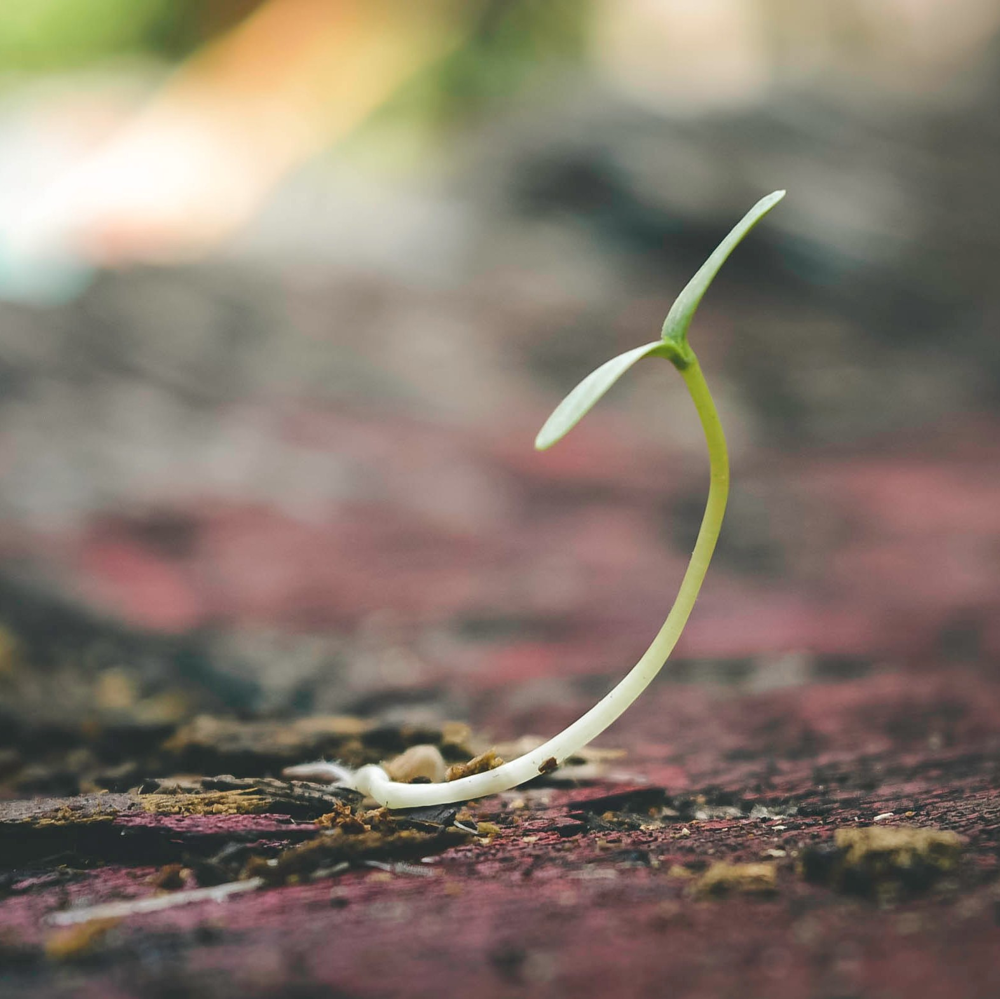
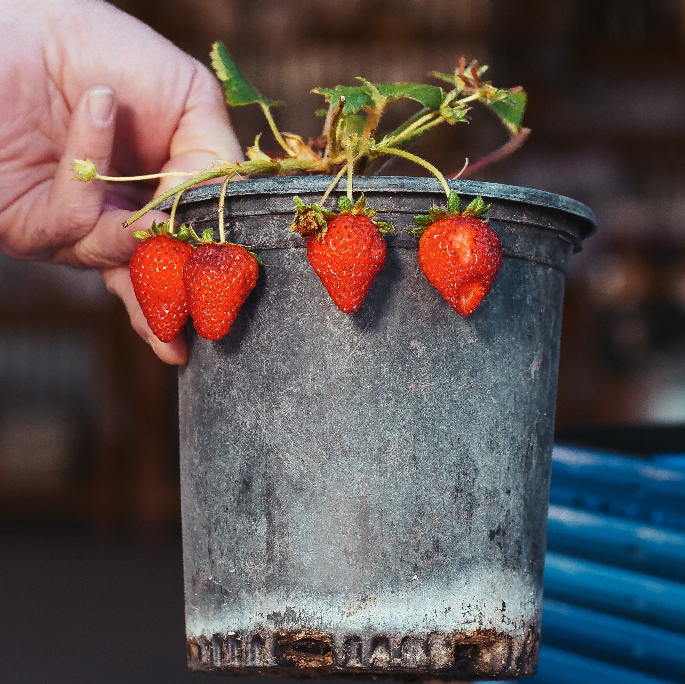
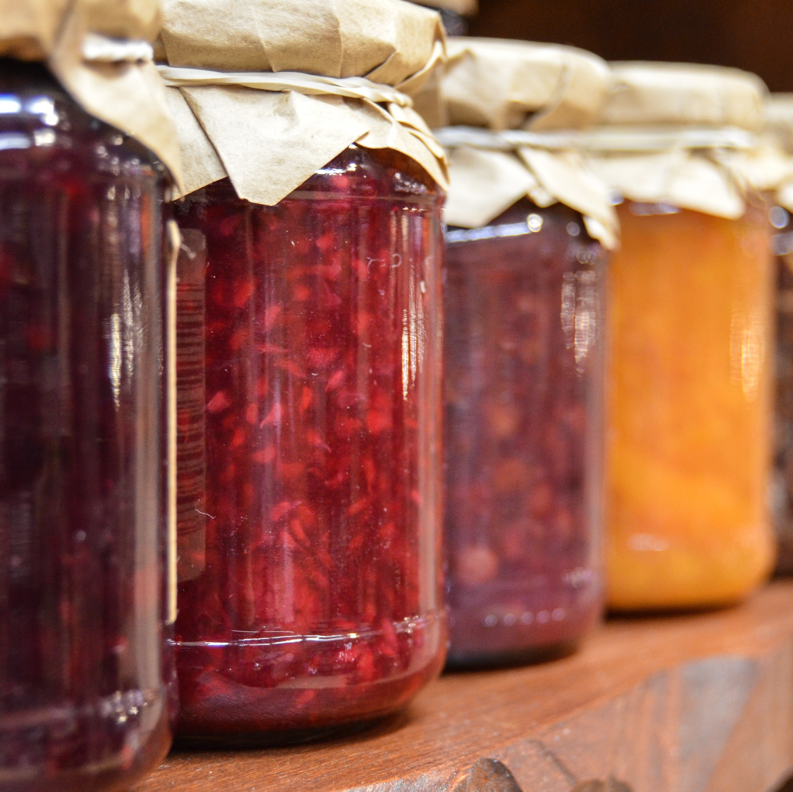
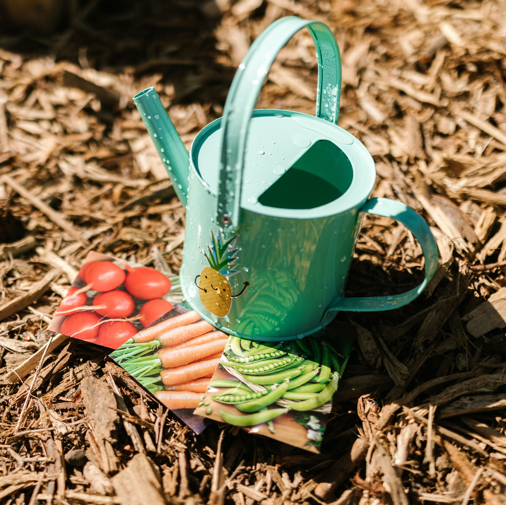

Strawberries for Days
This is some subtext about strawberries. It is smaller and the color contrast is lower.
You need more strawberries in your life

Grow strawberries from seeds or seedlings. It's pretty easy!

Or just buy some mature plants. That's even easier!

Strawberries also make great jam. Pick up some today!

You might need some tools. Give your strawberries some TLC.
Do you remember the Shire, Mr. Frodo? It'll be spring soon. And the orchards will be in blossom. And the birds will be nesting in the hazel thicket. And they'll be sowing the summer barley in the lower fields... and eating the first of the strawberries with cream. Do you remember the taste of strawberries?
Get some strawberries now!
Don't wait for the apocalypse to start enjoying what we take for granted today.